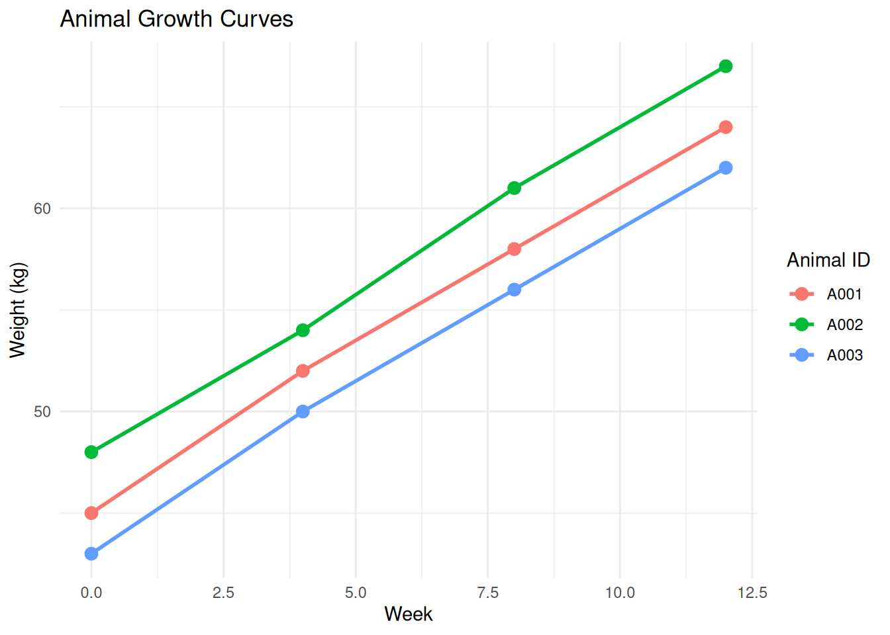

library(tidyverse) # Includes tidyr, dplyr, purrr
library(readxl) # For reading Excel files
# Set default theme for plots
theme_set(theme_minimal())7 Data Reshaping, Joining, and Iteration
7.1 Learning Objectives
By the end of this chapter, you will be able to:
- Understand and apply tidy data principles to organize datasets effectively
- Reshape data between wide and long formats using
pivot_longer()andpivot_wider() - Split and combine columns using
separate()andunite() - Join multiple datasets using SQL-style joins (
left_join(),inner_join(), etc.) - Understand when to use different join types and filtering joins
- Bind datasets together with
bind_rows()andbind_cols() - Use functional programming with
purrr::map()for iteration - Work with list columns and nested data structures
7.2 Introduction
In previous chapters, you learned to manipulate single datasets with dplyr. Real-world analysis often requires: - Reshaping data between different formats - Combining multiple related datasets - Iterating operations across many groups or files
This chapter teaches these essential data wrangling skills using tidyr for reshaping and purrr for iteration.
7.2.1 Setup
7.3 Tidy Data Principles
7.3.1 What is Tidy Data?
Tidy data follows three interrelated rules:
- Each variable forms a column
- Each observation forms a row
- Each type of observational unit forms a table
NoteHadley Wickham’s Tidy Data
The concept of tidy data comes from Hadley Wickham’s 2014 paper in the Journal of Statistical Software. Tidy data makes analysis easier because: - Variables are easy to access as columns - Observations are easy to filter as rows - Most tidyverse functions expect tidy data
7.3.2 Tidy vs Untidy Data
Example 1: Animal weight measurements
Untidy (wide format):
# Each time point is a separate column
untidy_weights <- tibble(
animal_id = c("A001", "A002", "A003"),
week_0 = c(45, 48, 43),
week_4 = c(52, 54, 50),
week_8 = c(58, 61, 56),
week_12 = c(64, 67, 62)
)
untidy_weights# A tibble: 3 × 5
animal_id week_0 week_4 week_8 week_12
<chr> <dbl> <dbl> <dbl> <dbl>
1 A001 45 52 58 64
2 A002 48 54 61 67
3 A003 43 50 56 62Tidy (long format):
# Each observation (animal × time) is a separate row
tidy_weights <- tibble(
animal_id = rep(c("A001", "A002", "A003"), each = 4),
week = rep(c(0, 4, 8, 12), times = 3),
weight_kg = c(45, 52, 58, 64, # A001
48, 54, 61, 67, # A002
43, 50, 56, 62) # A003
)
tidy_weights# A tibble: 12 × 3
animal_id week weight_kg
<chr> <dbl> <dbl>
1 A001 0 45
2 A001 4 52
3 A001 8 58
4 A001 12 64
5 A002 0 48
6 A002 4 54
7 A002 8 61
8 A002 12 67
9 A003 0 43
10 A003 4 50
11 A003 8 56
12 A003 12 62Why is tidy better?
# Easy to plot with ggplot2
ggplot(tidy_weights, aes(x = week, y = weight_kg, color = animal_id)) +
geom_line(linewidth = 1) +
geom_point(size = 3) +
labs(title = "Animal Growth Curves",
x = "Week",
y = "Weight (kg)",
color = "Animal ID")
# Easy to calculate summaries
tidy_weights %>%
group_by(week) %>%
summarise(
mean_weight = mean(weight_kg),
sd_weight = sd(weight_kg)
)# A tibble: 4 × 3
week mean_weight sd_weight
<dbl> <dbl> <dbl>
1 0 45.3 2.52
2 4 52 2
3 8 58.3 2.52
4 12 64.3 2.527.3.3 Common Messy Data Problems
- Column headers are values, not variable names (like
week_0,week_4) - Multiple variables in one column (like “Holstein-Male”)
- Variables stored in both rows and columns
- Multiple types of observational units in the same table
- Single observational unit stored in multiple tables
This chapter teaches how to fix these problems.
7.4 Data Reshaping with tidyr
7.4.1 pivot_longer(): Wide to Long
pivot_longer() transforms wide data (many columns) into long data (many rows).
Basic syntax:
pivot_longer(
data,
cols = <columns to pivot>,
names_to = "<name for new column with old column names>",
values_to = "<name for new column with values>"
)7.4.1.1 Example: Pivoting Weight Measurements
# Start with wide format
wide_weights <- tibble(
animal_id = c("A001", "A002", "A003"),
breed = c("Holstein", "Jersey", "Angus"),
week_0 = c(45, 42, 48),
week_4 = c(52, 48, 54),
week_8 = c(58, 54, 61)
)
wide_weights# A tibble: 3 × 5
animal_id breed week_0 week_4 week_8
<chr> <chr> <dbl> <dbl> <dbl>
1 A001 Holstein 45 52 58
2 A002 Jersey 42 48 54
3 A003 Angus 48 54 61# Pivot to long format
long_weights <- wide_weights %>%
pivot_longer(
cols = starts_with("week"),
names_to = "time_point",
values_to = "weight_kg"
)
long_weights# A tibble: 9 × 4
animal_id breed time_point weight_kg
<chr> <chr> <chr> <dbl>
1 A001 Holstein week_0 45
2 A001 Holstein week_4 52
3 A001 Holstein week_8 58
4 A002 Jersey week_0 42
5 A002 Jersey week_4 48
6 A002 Jersey week_8 54
7 A003 Angus week_0 48
8 A003 Angus week_4 54
9 A003 Angus week_8 617.4.1.2 Selecting Columns to Pivot
Multiple ways to specify which columns to pivot:
# By name
wide_weights %>%
pivot_longer(
cols = c(week_0, week_4, week_8),
names_to = "time_point",
values_to = "weight_kg"
)# A tibble: 9 × 4
animal_id breed time_point weight_kg
<chr> <chr> <chr> <dbl>
1 A001 Holstein week_0 45
2 A001 Holstein week_4 52
3 A001 Holstein week_8 58
4 A002 Jersey week_0 42
5 A002 Jersey week_4 48
6 A002 Jersey week_8 54
7 A003 Angus week_0 48
8 A003 Angus week_4 54
9 A003 Angus week_8 61# By position
wide_weights %>%
pivot_longer(
cols = 3:5,
names_to = "time_point",
values_to = "weight_kg"
)# A tibble: 9 × 4
animal_id breed time_point weight_kg
<chr> <chr> <chr> <dbl>
1 A001 Holstein week_0 45
2 A001 Holstein week_4 52
3 A001 Holstein week_8 58
4 A002 Jersey week_0 42
5 A002 Jersey week_4 48
6 A002 Jersey week_8 54
7 A003 Angus week_0 48
8 A003 Angus week_4 54
9 A003 Angus week_8 61# Everything except ID columns
wide_weights %>%
pivot_longer(
cols = -c(animal_id, breed),
names_to = "time_point",
values_to = "weight_kg"
)# A tibble: 9 × 4
animal_id breed time_point weight_kg
<chr> <chr> <chr> <dbl>
1 A001 Holstein week_0 45
2 A001 Holstein week_4 52
3 A001 Holstein week_8 58
4 A002 Jersey week_0 42
5 A002 Jersey week_4 48
6 A002 Jersey week_8 54
7 A003 Angus week_0 48
8 A003 Angus week_4 54
9 A003 Angus week_8 617.4.1.3 Cleaning Column Names During Pivot
Use names_prefix to remove prefixes and names_transform to change types:
# Remove "week_" prefix and convert to numeric
wide_weights %>%
pivot_longer(
cols = starts_with("week"),
names_to = "week",
values_to = "weight_kg",
names_prefix = "week_",
names_transform = list(week = as.integer)
)# A tibble: 9 × 4
animal_id breed week weight_kg
<chr> <chr> <int> <dbl>
1 A001 Holstein 0 45
2 A001 Holstein 4 52
3 A001 Holstein 8 58
4 A002 Jersey 0 42
5 A002 Jersey 4 48
6 A002 Jersey 8 54
7 A003 Angus 0 48
8 A003 Angus 4 54
9 A003 Angus 8 617.4.1.4 Multiple Value Columns
What if you have multiple measurements at each time point?
# Wide data with multiple measurements
wide_multi <- tibble(
animal_id = c("A001", "A002"),
weight_week0 = c(45, 42),
weight_week4 = c(52, 48),
height_week0 = c(80, 78),
height_week4 = c(85, 82)
)
wide_multi# A tibble: 2 × 5
animal_id weight_week0 weight_week4 height_week0 height_week4
<chr> <dbl> <dbl> <dbl> <dbl>
1 A001 45 52 80 85
2 A002 42 48 78 82# Alternative: create separate columns for each measurement
wide_multi %>%
pivot_longer(
cols = -animal_id,
names_to = c(".value", "week"),
names_pattern = "(.+)_week(.+)"
)# A tibble: 4 × 4
animal_id week weight height
<chr> <chr> <dbl> <dbl>
1 A001 0 45 80
2 A001 4 52 85
3 A002 0 42 78
4 A002 4 48 82
Tip
names_pattern with Regular Expressions
Use names_pattern with regex to extract parts of column names: - .+ matches one or more characters - (.+) creates a capture group - week(.+) matches “week” followed by captured characters
7.4.2 pivot_wider(): Long to Wide
pivot_wider() transforms long data (many rows) into wide data (many columns). It’s the opposite of pivot_longer().
Basic syntax:
pivot_wider(
data,
names_from = <column with names for new columns>,
values_from = <column with values to fill new columns>
)7.4.2.1 Example: Creating a Summary Table
# Long format data
animals_long <- tibble(
animal_id = rep(c("A001", "A002", "A003"), each = 3),
breed = rep(c("Holstein", "Jersey", "Angus"), each = 3),
treatment = rep(c("Control", "Treatment_A", "Treatment_B"), times = 3),
weight_gain_kg = c(15, 22, 18, 12, 18, 15, 16, 21, 17)
)
animals_long# A tibble: 9 × 4
animal_id breed treatment weight_gain_kg
<chr> <chr> <chr> <dbl>
1 A001 Holstein Control 15
2 A001 Holstein Treatment_A 22
3 A001 Holstein Treatment_B 18
4 A002 Jersey Control 12
5 A002 Jersey Treatment_A 18
6 A002 Jersey Treatment_B 15
7 A003 Angus Control 16
8 A003 Angus Treatment_A 21
9 A003 Angus Treatment_B 17# Pivot wider: treatments become columns
animals_wide <- animals_long %>%
pivot_wider(
names_from = treatment,
values_from = weight_gain_kg
)
animals_wide# A tibble: 3 × 5
animal_id breed Control Treatment_A Treatment_B
<chr> <chr> <dbl> <dbl> <dbl>
1 A001 Holstein 15 22 18
2 A002 Jersey 12 18 15
3 A003 Angus 16 21 177.4.2.2 Handling Multiple Value Columns
# Long data with multiple measurements
measurements_long <- tibble(
animal_id = rep(c("A001", "A002"), each = 4),
week = rep(c(0, 4, 8, 12), times = 2),
weight_kg = c(45, 52, 58, 64, 42, 48, 54, 60),
height_cm = c(80, 85, 88, 91, 78, 82, 85, 88)
)
measurements_long# A tibble: 8 × 4
animal_id week weight_kg height_cm
<chr> <dbl> <dbl> <dbl>
1 A001 0 45 80
2 A001 4 52 85
3 A001 8 58 88
4 A001 12 64 91
5 A002 0 42 78
6 A002 4 48 82
7 A002 8 54 85
8 A002 12 60 88# Pivot wider: weeks become columns for each measurement
measurements_long %>%
pivot_wider(
names_from = week,
values_from = c(weight_kg, height_cm),
names_glue = "{.value}_week{week}"
)# A tibble: 2 × 9
animal_id weight_kg_week0 weight_kg_week4 weight_kg_week8 weight_kg_week12
<chr> <dbl> <dbl> <dbl> <dbl>
1 A001 45 52 58 64
2 A002 42 48 54 60
# ℹ 4 more variables: height_cm_week0 <dbl>, height_cm_week4 <dbl>,
# height_cm_week8 <dbl>, height_cm_week12 <dbl>7.4.2.3 Dealing with Duplicates
What if you have duplicate id-time combinations?
# Data with duplicates
duplicated_data <- tibble(
animal_id = c("A001", "A001", "A002", "A002"),
week = c(0, 0, 0, 0), # Same animal measured twice
weight_kg = c(45, 46, 42, 43)
)
duplicated_data# A tibble: 4 × 3
animal_id week weight_kg
<chr> <dbl> <dbl>
1 A001 0 45
2 A001 0 46
3 A002 0 42
4 A002 0 43# Summarize first to remove duplicates
duplicated_data %>%
group_by(animal_id, week) %>%
summarise(weight_kg = mean(weight_kg), .groups = "drop") %>%
pivot_wider(
names_from = week,
values_from = weight_kg
)# A tibble: 2 × 2
animal_id `0`
<chr> <dbl>
1 A001 45.5
2 A002 42.5
WarningWatch Out for Duplicates!
pivot_wider() creates list-columns when there are multiple values for the same id × names_from combination. Either: - Summarize first (take mean, max, etc.) - Keep as list-column and unnest() later - Check your data for unexpected duplicates
7.4.3 separate(): Split One Column into Many
separate() splits a single column into multiple columns based on a separator.
Basic syntax:
separate(
data,
col = <column to split>,
into = c("<new_col1>", "<new_col2>"),
sep = "<separator>"
)7.4.3.1 Example: Splitting Composite IDs
# Data with composite identifiers
animals_composite <- tibble(
animal_id = c("Holstein_M_001", "Jersey_F_002", "Angus_M_003"),
weight_kg = c(550, 420, 580)
)
animals_composite# A tibble: 3 × 2
animal_id weight_kg
<chr> <dbl>
1 Holstein_M_001 550
2 Jersey_F_002 420
3 Angus_M_003 580# Separate into components
animals_composite %>%
separate(
col = animal_id,
into = c("breed", "sex", "id_number"),
sep = "_"
)# A tibble: 3 × 4
breed sex id_number weight_kg
<chr> <chr> <chr> <dbl>
1 Holstein M 001 550
2 Jersey F 002 420
3 Angus M 003 5807.4.3.2 Automatic Type Conversion
# Separate and convert types automatically
animals_composite %>%
separate(
col = animal_id,
into = c("breed", "sex", "id_number"),
sep = "_",
convert = TRUE # Automatically converts to appropriate types
)# A tibble: 3 × 4
breed sex id_number weight_kg
<chr> <chr> <int> <dbl>
1 Holstein M 1 550
2 Jersey F 2 420
3 Angus M 3 5807.4.3.3 Keeping the Original Column
# Keep original column
animals_composite %>%
separate(
col = animal_id,
into = c("breed", "sex", "id_number"),
sep = "_",
remove = FALSE # Don't remove original column
)# A tibble: 3 × 5
animal_id breed sex id_number weight_kg
<chr> <chr> <chr> <chr> <dbl>
1 Holstein_M_001 Holstein M 001 550
2 Jersey_F_002 Jersey F 002 420
3 Angus_M_003 Angus M 003 5807.4.4 unite(): Combine Columns into One
unite() is the opposite of separate() — it combines multiple columns into one.
Basic syntax:
unite(
data,
col = "<new_column_name>",
...,
sep = "<separator>"
)7.4.4.1 Example: Creating Unique IDs
# Separate columns
animals_separated <- tibble(
farm = c("North", "South", "East"),
breed = c("Holstein", "Jersey", "Angus"),
id_num = c(1, 2, 3),
weight_kg = c(550, 420, 580)
)
animals_separated# A tibble: 3 × 4
farm breed id_num weight_kg
<chr> <chr> <dbl> <dbl>
1 North Holstein 1 550
2 South Jersey 2 420
3 East Angus 3 580# Unite into single ID
animals_separated %>%
unite(
col = "animal_id",
farm, breed, id_num,
sep = "_"
)# A tibble: 3 × 2
animal_id weight_kg
<chr> <dbl>
1 North_Holstein_1 550
2 South_Jersey_2 420
3 East_Angus_3 5807.4.4.2 Keeping Original Columns
# Keep original columns
animals_separated %>%
unite(
col = "animal_id",
farm, breed, id_num,
sep = "_",
remove = FALSE
)# A tibble: 3 × 5
animal_id farm breed id_num weight_kg
<chr> <chr> <chr> <dbl> <dbl>
1 North_Holstein_1 North Holstein 1 550
2 South_Jersey_2 South Jersey 2 420
3 East_Angus_3 East Angus 3 5807.4.5 When to Use Each Function
| Goal | Function | Example |
|---|---|---|
| Many columns → few rows | pivot_longer() |
week_0, week_4, week_8 → week column |
| Few columns → many rows | pivot_wider() |
week column → week_0, week_4, week_8 |
| One column → many columns | separate() |
“Holstein_M_001” → breed, sex, id |
| Many columns → one column | unite() |
breed, sex, id → “Holstein_M_001” |
7.5 Joining Datasets
In real-world analysis, data is often spread across multiple tables. Joins combine tables based on shared keys.
7.5.1 Relational Data Example
# Table 1: Animal information
animals <- tibble(
animal_id = c("A001", "A002", "A003", "A004"),
breed = c("Holstein", "Jersey", "Angus", "Holstein"),
birth_date = as.Date(c("2023-01-15", "2023-02-20", "2023-01-10", "2023-03-05"))
)
# Table 2: Weight records
weights <- tibble(
animal_id = c("A001", "A001", "A002", "A002", "A005"),
date = as.Date(c("2023-06-01", "2023-09-01", "2023-06-01", "2023-09-01", "2023-06-01")),
weight_kg = c(180, 220, 150, 185, 200)
)
# Table 3: Treatment assignments
treatments <- tibble(
animal_id = c("A001", "A002", "A003"),
treatment = c("Control", "Treatment_A", "Treatment_B")
)
animals# A tibble: 4 × 3
animal_id breed birth_date
<chr> <chr> <date>
1 A001 Holstein 2023-01-15
2 A002 Jersey 2023-02-20
3 A003 Angus 2023-01-10
4 A004 Holstein 2023-03-05weights# A tibble: 5 × 3
animal_id date weight_kg
<chr> <date> <dbl>
1 A001 2023-06-01 180
2 A001 2023-09-01 220
3 A002 2023-06-01 150
4 A002 2023-09-01 185
5 A005 2023-06-01 200treatments# A tibble: 3 × 2
animal_id treatment
<chr> <chr>
1 A001 Control
2 A002 Treatment_A
3 A003 Treatment_B7.5.2 Types of Joins
7.5.2.1 Mutating Joins: Add Columns
Visual representation:
flowchart TD
A[Mutating Joins<br/>Add columns from y to x] --> B[left_join]
A --> C[right_join]
A --> D[inner_join]
A --> E[full_join]
B --> B1[Keep all x rows<br/>Add matching y columns]
C --> C1[Keep all y rows<br/>Add matching x columns]
D --> D1[Keep only matching rows<br/>from both x and y]
E --> E1[Keep all rows<br/>from both x and y]
7.5.3 left_join(): Keep All Left Rows
Venn Diagram concept: All of LEFT + matching from RIGHT
# Left join: keep all animals, add treatment info
animals %>%
left_join(treatments, by = "animal_id")# A tibble: 4 × 4
animal_id breed birth_date treatment
<chr> <chr> <date> <chr>
1 A001 Holstein 2023-01-15 Control
2 A002 Jersey 2023-02-20 Treatment_A
3 A003 Angus 2023-01-10 Treatment_B
4 A004 Holstein 2023-03-05 <NA> Notice: - All 4 animals kept (even A004 with no treatment) - A004 gets NA for treatment - Unmatched rows from treatments (if any) are dropped
7.5.3.1 Use left_join() when:
- You want to add information to your main table
- You want to keep all rows from the main table
- Missing matches should be
NA
7.5.4 right_join(): Keep All Right Rows
Venn Diagram concept: All of RIGHT + matching from LEFT
# Right join: keep all treatments, add animal info
animals %>%
right_join(treatments, by = "animal_id")# A tibble: 3 × 4
animal_id breed birth_date treatment
<chr> <chr> <date> <chr>
1 A001 Holstein 2023-01-15 Control
2 A002 Jersey 2023-02-20 Treatment_A
3 A003 Angus 2023-01-10 Treatment_B
Note
right_join() is Rarely Used
right_join(x, y) gives the same result as left_join(y, x). Most people prefer to use left_join() and think about the “main” table being on the left.
# These are equivalent:
animals %>% right_join(treatments)
treatments %>% left_join(animals)7.5.5 inner_join(): Keep Only Matching Rows
Venn Diagram concept: Only the INTERSECTION
# Inner join: keep only animals with treatments
animals %>%
inner_join(treatments, by = "animal_id")# A tibble: 3 × 4
animal_id breed birth_date treatment
<chr> <chr> <date> <chr>
1 A001 Holstein 2023-01-15 Control
2 A002 Jersey 2023-02-20 Treatment_A
3 A003 Angus 2023-01-10 Treatment_BNotice: - Only 3 animals kept (A001, A002, A003) - A004 dropped (no treatment) - Perfect when you only want complete cases
7.5.5.1 Use inner_join() when:
- You only want rows that match in both tables
- Unmatched rows should be excluded
- You’re analyzing complete cases only
7.5.6 full_join(): Keep All Rows from Both
Venn Diagram concept: UNION of LEFT and RIGHT
# Full join: keep everything
animals %>%
full_join(treatments, by = "animal_id")# A tibble: 4 × 4
animal_id breed birth_date treatment
<chr> <chr> <date> <chr>
1 A001 Holstein 2023-01-15 Control
2 A002 Jersey 2023-02-20 Treatment_A
3 A003 Angus 2023-01-10 Treatment_B
4 A004 Holstein 2023-03-05 <NA> 7.5.6.1 Use full_join() when:
- You want all data from both tables
- You want to see what’s missing from each table
- You’ll handle
NAvalues later
7.5.7 Joining with Multiple Keys
What if matching requires multiple columns?
# Farm data with state
farms <- tibble(
farm_name = c("Green Acres", "Sunny Farm", "Green Acres"),
state = c("Iowa", "Kansas", "Nebraska"),
size_acres = c(500, 350, 600)
)
# Animal locations
animal_locations <- tibble(
animal_id = c("A001", "A002", "A003"),
farm_name = c("Green Acres", "Sunny Farm", "Green Acres"),
state = c("Iowa", "Kansas", "Iowa")
)
# Join on both farm_name AND state
animal_locations %>%
left_join(farms, by = c("farm_name", "state"))# A tibble: 3 × 4
animal_id farm_name state size_acres
<chr> <chr> <chr> <dbl>
1 A001 Green Acres Iowa 500
2 A002 Sunny Farm Kansas 350
3 A003 Green Acres Iowa 5007.5.8 Joining with Different Column Names
# Different ID column names
table1 <- tibble(
animal_id = c("A001", "A002", "A003"),
weight_kg = c(180, 150, 200)
)
table2 <- tibble(
id = c("A001", "A002", "A004"),
breed = c("Holstein", "Jersey", "Angus")
)
# Specify which columns to join on
table1 %>%
left_join(table2, by = c("animal_id" = "id"))# A tibble: 3 × 3
animal_id weight_kg breed
<chr> <dbl> <chr>
1 A001 180 Holstein
2 A002 150 Jersey
3 A003 200 <NA> 7.5.9 Filtering Joins: Filter Rows (Don’t Add Columns)
7.5.9.1 semi_join(): Keep Rows with Matches
# Semi join: keep animals that have treatments (but don't add treatment column)
animals %>%
semi_join(treatments, by = "animal_id")# A tibble: 3 × 3
animal_id breed birth_date
<chr> <chr> <date>
1 A001 Holstein 2023-01-15
2 A002 Jersey 2023-02-20
3 A003 Angus 2023-01-10Use semi_join() to answer: “Which x rows have a match in y?”
7.5.9.2 anti_join(): Keep Rows WITHOUT Matches
# Anti join: keep animals that DON'T have treatments
animals %>%
anti_join(treatments, by = "animal_id")# A tibble: 1 × 3
animal_id breed birth_date
<chr> <chr> <date>
1 A004 Holstein 2023-03-05Use anti_join() to answer: “Which x rows DON’T have a match in y?”
This is incredibly useful for finding missing data or orphaned records.
7.5.10 Join Summary Table
| Join Type | Rows Kept | Columns Added | Use When |
|---|---|---|---|
left_join(x, y) |
All from x | From y | Adding info to main table |
right_join(x, y) |
All from y | From x | Rarely used (use left_join instead) |
inner_join(x, y) |
Only matches | From both | Only want complete cases |
full_join(x, y) |
All from both | From both | Keep everything |
semi_join(x, y) |
Matches from x | None | Filter x by presence in y |
anti_join(x, y) |
Non-matches from x | None | Filter x by absence in y |
7.5.11 Common Join Problems and Solutions
7.5.11.1 Problem 1: Duplicate Keys
# Multiple weights per animal
weights_dup <- tibble(
animal_id = c("A001", "A001", "A002"),
weight_kg = c(180, 185, 150)
)
# Join creates all combinations
animals %>%
left_join(weights_dup, by = "animal_id")# A tibble: 5 × 4
animal_id breed birth_date weight_kg
<chr> <chr> <date> <dbl>
1 A001 Holstein 2023-01-15 180
2 A001 Holstein 2023-01-15 185
3 A002 Jersey 2023-02-20 150
4 A003 Angus 2023-01-10 NA
5 A004 Holstein 2023-03-05 NASolution: If you only want one weight per animal, summarize first:
weights_dup %>%
group_by(animal_id) %>%
summarise(avg_weight_kg = mean(weight_kg), .groups = "drop") %>%
left_join(animals, ., by = "animal_id")# A tibble: 4 × 4
animal_id breed birth_date avg_weight_kg
<chr> <chr> <date> <dbl>
1 A001 Holstein 2023-01-15 182.
2 A002 Jersey 2023-02-20 150
3 A003 Angus 2023-01-10 NA
4 A004 Holstein 2023-03-05 NA
WarningAlways Specify
by =
If you don’t specify by, joins use all columns with the same name. This can lead to: - Unintended matches - Silent errors - Confusing results
Best practice: Always explicitly state by = "column_name"
7.5.12 Real-World Example: Combining Multiple Tables
# Start with animals
result <- animals %>%
# Add treatments
left_join(treatments, by = "animal_id") %>%
# Add weights (keeping all weight records)
left_join(weights, by = "animal_id") %>%
# Calculate age at weighing
mutate(
age_days = as.numeric(date - birth_date),
.after = date
)
result# A tibble: 6 × 7
animal_id breed birth_date treatment date age_days weight_kg
<chr> <chr> <date> <chr> <date> <dbl> <dbl>
1 A001 Holstein 2023-01-15 Control 2023-06-01 137 180
2 A001 Holstein 2023-01-15 Control 2023-09-01 229 220
3 A002 Jersey 2023-02-20 Treatment_A 2023-06-01 101 150
4 A002 Jersey 2023-02-20 Treatment_A 2023-09-01 193 185
5 A003 Angus 2023-01-10 Treatment_B NA NA NA
6 A004 Holstein 2023-03-05 <NA> NA NA NA7.6 Binding Datasets
Sometimes you need to combine datasets by stacking (rows) or attaching (columns), not by joining on keys.
7.6.1 bind_rows(): Stack Datasets Vertically
Use when you have the same structure in multiple datasets.
# Data from multiple farms
farm_a <- tibble(
animal_id = c("A001", "A002"),
weight_kg = c(180, 150),
farm = "Farm_A"
)
farm_b <- tibble(
animal_id = c("B001", "B002"),
weight_kg = c(170, 160),
farm = "Farm_B"
)
# Stack them
bind_rows(farm_a, farm_b)# A tibble: 4 × 3
animal_id weight_kg farm
<chr> <dbl> <chr>
1 A001 180 Farm_A
2 A002 150 Farm_A
3 B001 170 Farm_B
4 B002 160 Farm_B7.6.1.1 Handling Missing Columns
# Different columns
df1 <- tibble(animal_id = "A001", weight_kg = 180)
df2 <- tibble(animal_id = "B001", height_cm = 125)
# bind_rows() fills missing columns with NA
bind_rows(df1, df2)# A tibble: 2 × 3
animal_id weight_kg height_cm
<chr> <dbl> <dbl>
1 A001 180 NA
2 B001 NA 1257.6.1.2 Adding Source Identifier
# Or use named list
bind_rows(
"Iowa" = farm_a,
"Kansas" = farm_b,
.id = "state"
)# A tibble: 4 × 4
state animal_id weight_kg farm
<chr> <chr> <dbl> <chr>
1 Iowa A001 180 Farm_A
2 Iowa A002 150 Farm_A
3 Kansas B001 170 Farm_B
4 Kansas B002 160 Farm_B7.6.2 bind_cols(): Attach Datasets Horizontally
WarningUse
bind_cols() with Caution!
bind_cols() simply attaches columns side-by-side based on row position. It does NOT match by keys!
Problems: - No checking if rows actually match - Row order must be identical - Easy to create mismatched data
Better alternative: Use a join with a row number or ID column.
# Two datasets with same row order (risky!)
ids <- tibble(animal_id = c("A001", "A002", "A003"))
weights <- tibble(weight_kg = c(180, 150, 200))
# Attach side-by-side
bind_cols(ids, weights)# A tibble: 3 × 2
animal_id weight_kg
<chr> <dbl>
1 A001 180
2 A002 150
3 A003 200# MUCH SAFER: Use mutate instead if they're truly row-aligned
ids %>%
mutate(weight_kg = weights$weight_kg)# A tibble: 3 × 2
animal_id weight_kg
<chr> <dbl>
1 A001 180
2 A002 150
3 A003 200# Or use a proper join if you have keys!7.6.3 When to Use Binding vs Joining
| Use | bind_rows() |
bind_cols() |
Join |
|---|---|---|---|
| Same structure, stack vertically | ✅ | ❌ | ❌ |
| Different farms/time periods | ✅ | ❌ | ❌ |
| Add columns based on keys | ❌ | ❌ | ✅ |
| Row-aligned data (same order) | ❌ | ⚠️ Use with caution | ❌ |
| Relational data (shared IDs) | ❌ | ❌ | ✅ |
7.7 Iteration with purrr
The purrr package provides tools for functional programming — applying functions across elements of a list or vector.
7.7.1 Why Use map() Instead of Loops?
# Example: Calculate mean of each column
# Base R loop approach
col_means_loop <- numeric(ncol(mtcars))
for (i in seq_along(mtcars)) {
col_means_loop[i] <- mean(mtcars[[i]])
}
col_means_loop [1] 20.090625 6.187500 230.721875 146.687500 3.596563 3.217250
[7] 17.848750 0.437500 0.406250 3.687500 2.812500# purrr approach
col_means_map <- map_dbl(mtcars, mean)
col_means_map mpg cyl disp hp drat wt qsec
20.090625 6.187500 230.721875 146.687500 3.596563 3.217250 17.848750
vs am gear carb
0.437500 0.406250 3.687500 2.812500 # They're the same!
all.equal(col_means_loop, col_means_map)[1] "names for current but not for target"Benefits of map(): - More concise - Less error-prone (no index management) - Easier to read intent - Consistent return types
NoteWhen to Use Loops vs
map()
Use loops when: - You need to modify objects in place - The operation depends on previous iterations - The logic is complex and loops are clearer
Use map() when: - Applying the same operation to each element - You want consistent output types - You’re working with lists or data frames
7.7.2 Basic map() Functions
# Create example data
numbers <- list(
a = c(1, 2, 3, 4, 5),
b = c(10, 20, 30),
c = c(100, 200, 300, 400)
)
# map() returns a list
map(numbers, mean)$a
[1] 3
$b
[1] 20
$c
[1] 250# map_dbl() returns a numeric vector
map_dbl(numbers, mean) a b c
3 20 250 # map_chr() returns a character vector
map_chr(numbers, \(x) paste("Mean:", round(mean(x), 1))) a b c
"Mean: 3" "Mean: 20" "Mean: 250" # map_int() returns an integer vector
map_int(numbers, length)a b c
5 3 4 # map_lgl() returns a logical vector
map_lgl(numbers, \(x) mean(x) > 50) a b c
FALSE FALSE TRUE 7.7.3 map() with Data Frames
# Create example animal data
animals_list <- list(
farm_a = tibble(animal_id = c("A001", "A002"), weight_kg = c(180, 150)),
farm_b = tibble(animal_id = c("B001", "B002"), weight_kg = c(170, 160)),
farm_c = tibble(animal_id = c("C001", "C002"), weight_kg = c(190, 165))
)
# Calculate mean weight for each farm
map_dbl(animals_list, \(df) mean(df$weight_kg))farm_a farm_b farm_c
165.0 165.0 177.5 # Count rows in each data frame
map_int(animals_list, nrow)farm_a farm_b farm_c
2 2 2 # Add a new column to each data frame
map(animals_list, \(df) mutate(df, weight_lb = weight_kg * 2.20462))$farm_a
# A tibble: 2 × 3
animal_id weight_kg weight_lb
<chr> <dbl> <dbl>
1 A001 180 397.
2 A002 150 331.
$farm_b
# A tibble: 2 × 3
animal_id weight_kg weight_lb
<chr> <dbl> <dbl>
1 B001 170 375.
2 B002 160 353.
$farm_c
# A tibble: 2 × 3
animal_id weight_kg weight_lb
<chr> <dbl> <dbl>
1 C001 190 419.
2 C002 165 364.7.7.4 Anonymous Functions in map()
Three ways to write anonymous functions:
numbers <- list(a = 1:5, b = 10:15, c = 20:25)
# 1. Traditional function() syntax
map_dbl(numbers, function(x) mean(x) * 2) a b c
6 25 45 # 2. Formula shorthand with ~ and .x
map_dbl(numbers, ~ mean(.x) * 2) a b c
6 25 45 # 3. Lambda function with \() (R >= 4.1)
map_dbl(numbers, \(x) mean(x) * 2) a b c
6 25 45 All three are equivalent. Use whichever you find most readable.
7.7.5 map2(): Iterate Over Two Inputs
When you need to iterate over two vectors/lists in parallel:
# Two vectors to iterate over
weights_kg <- c(180, 150, 200)
prices_per_kg <- c(5, 5.50, 4.80)
# Calculate total value for each animal
map2_dbl(weights_kg, prices_per_kg, \(w, p) w * p)[1] 900 825 960# With names
animals <- c("A001", "A002", "A003")
map2_chr(animals, weights_kg, \(id, wt) paste(id, "weighs", wt, "kg"))[1] "A001 weighs 180 kg" "A002 weighs 150 kg" "A003 weighs 200 kg"7.7.6 pmap(): Iterate Over Many Inputs
For more than two inputs, use pmap():
# Data frame with multiple columns
sales <- tibble(
animal_id = c("A001", "A002", "A003"),
weight_kg = c(180, 150, 200),
price_per_kg = c(5, 5.50, 4.80),
bonus = c(50, 30, 60)
)
# Calculate total value: (weight * price) + bonus
sales %>%
mutate(
total_value = pmap_dbl(
list(weight_kg, price_per_kg, bonus),
\(w, p, b) (w * p) + b
)
)# A tibble: 3 × 5
animal_id weight_kg price_per_kg bonus total_value
<chr> <dbl> <dbl> <dbl> <dbl>
1 A001 180 5 50 950
2 A002 150 5.5 30 855
3 A003 200 4.8 60 10207.7.7 Practical Example: Reading Multiple Files
# Get list of CSV files
file_list <- list.files(path = "data/", pattern = "*.csv", full.names = TRUE)
# Read all files into a list
all_data <- map(file_list, read_csv)
# Combine into single data frame with source file
combined_data <- map(file_list, read_csv) %>%
set_names(basename(file_list)) %>%
bind_rows(.id = "source_file")7.7.8 Handling Errors with safely() and possibly()
Sometimes operations fail for some elements. Handle errors gracefully:
# Some operations might fail
mixed_list <- list(
a = c(1, 2, 3),
b = c("a", "b", "c"), # This will cause an error with mean()
c = c(10, 20, 30)
)
# This would error:
# map_dbl(mixed_list, mean)
# Use safely() to catch errors
safe_mean <- safely(mean)
map(mixed_list, safe_mean)$a
$a$result
[1] 2
$a$error
NULL
$b
$b$result
[1] NA
$b$error
NULL
$c
$c$result
[1] 20
$c$error
NULL# Use possibly() to return a default value on error
possibly_mean <- possibly(mean, otherwise = NA_real_)
map_dbl(mixed_list, possibly_mean) a b c
2 NA 20 7.8 List Columns and Nested Data
List columns allow you to store complex objects (like data frames) inside data frame cells.
7.8.1 Creating Nested Data
# Example: Group and nest
animals_nested <- tibble(
animal_id = c("A001", "A002", "A003", "A001", "A002", "A003"),
week = c(0, 0, 0, 4, 4, 4),
weight_kg = c(45, 42, 48, 52, 48, 54)
) %>%
group_by(animal_id) %>%
nest()
animals_nested# A tibble: 3 × 2
# Groups: animal_id [3]
animal_id data
<chr> <list>
1 A001 <tibble [2 × 2]>
2 A002 <tibble [2 × 2]>
3 A003 <tibble [2 × 2]># Each row now contains a data frame in the 'data' column
animals_nested$data[[1]] # Data for first animal# A tibble: 2 × 2
week weight_kg
<dbl> <dbl>
1 0 45
2 4 527.8.2 Working with Nested Data
# Calculate statistics for each animal's data
animals_nested %>%
mutate(
n_measurements = map_int(data, nrow),
mean_weight = map_dbl(data, ~mean(.x$weight_kg)),
weight_gain = map_dbl(data, ~diff(range(.x$weight_kg)))
)# A tibble: 3 × 5
# Groups: animal_id [3]
animal_id data n_measurements mean_weight weight_gain
<chr> <list> <int> <dbl> <dbl>
1 A001 <tibble [2 × 2]> 2 48.5 7
2 A002 <tibble [2 × 2]> 2 45 6
3 A003 <tibble [2 × 2]> 2 51 67.8.3 Fitting Models to Nested Data
# Create more complete data
set.seed(123)
growth_data <- tibble(
animal_id = rep(c("A001", "A002", "A003"), each = 5),
week = rep(c(0, 2, 4, 6, 8), times = 3),
weight_kg = c(
45 + (0:4) * 2 + rnorm(5, 0, 1), # A001
42 + (0:4) * 1.8 + rnorm(5, 0, 1), # A002
48 + (0:4) * 2.2 + rnorm(5, 0, 1) # A003
)
)
# Nest by animal
growth_nested <- growth_data %>%
group_by(animal_id) %>%
nest()
# Fit linear model to each animal's growth
growth_nested <- growth_nested %>%
mutate(
model = map(data, ~lm(weight_kg ~ week, data = .x)),
growth_rate = map_dbl(model, ~coef(.x)[2])
)
growth_nested# A tibble: 3 × 4
# Groups: animal_id [3]
animal_id data model growth_rate
<chr> <list> <list> <dbl>
1 A001 <tibble [5 × 2]> <lm> 1.08
2 A002 <tibble [5 × 2]> <lm> 0.627
3 A003 <tibble [5 × 2]> <lm> 0.910# Extract coefficients
growth_nested %>%
select(animal_id, growth_rate)# A tibble: 3 × 2
# Groups: animal_id [3]
animal_id growth_rate
<chr> <dbl>
1 A001 1.08
2 A002 0.627
3 A003 0.9107.8.4 Unnesting
Convert list columns back to regular rows:
# Unnest data column
growth_nested %>%
select(animal_id, data) %>%
unnest(cols = data)# A tibble: 15 × 3
# Groups: animal_id [3]
animal_id week weight_kg
<chr> <dbl> <dbl>
1 A001 0 44.4
2 A001 2 46.8
3 A001 4 50.6
4 A001 6 51.1
5 A001 8 53.1
6 A002 0 43.7
7 A002 2 44.3
8 A002 4 44.3
9 A002 6 46.7
10 A002 8 48.8
11 A003 0 49.2
12 A003 2 50.6
13 A003 4 52.8
14 A003 6 54.7
15 A003 8 56.27.9 Summary
This chapter covered three major topics for advanced data wrangling:
7.9.1 Data Reshaping (tidyr)
pivot_longer(): Wide → Long format- Convert column names to values
- Stack measurements
pivot_wider(): Long → Wide format- Create summary tables
- Spread values across columns
separate()&unite(): Split or combine columns- Extract information from composite columns
- Create unique identifiers
7.9.2 Joining Datasets
- Mutating joins (add columns):
left_join(): Keep all left, add matching rightinner_join(): Keep only matchesfull_join(): Keep everything
- Filtering joins (filter rows):
semi_join(): Keep rows with matchesanti_join(): Keep rows without matches
- Binding:
bind_rows(): Stack verticallybind_cols(): Attach horizontally (use cautiously)
7.9.3 Iteration (purrr)
map()functions: Apply functions to each elementmap(): Returns listmap_dbl(),map_chr(),map_int(),map_lgl(): Return vectors
- Multiple inputs:
map2(): Two inputspmap(): Many inputs
- List columns: Store complex objects in data frames
nest(): Create nested dataunnest(): Expand nested data
7.10 Week 7 Homework: Multi-Table Data Integration
7.10.1 Assignment Overview
You will work with three related datasets about a pig feeding trial. Your task is to reshape, join, and analyze the data using techniques from this chapter.
7.10.2 Part 1: Data Generation (0 points, but required)
Run this code to create your datasets:
library(tidyverse)
set.seed(2024)
# Dataset 1: Pig information
pigs <- tibble(
pig_id = paste0("P", 1001:1050),
breed = sample(c("Yorkshire", "Duroc", "Hampshire"), 50, replace = TRUE),
birth_date = as.Date("2023-03-01") + sample(0:30, 50, replace = TRUE),
initial_weight_kg = rnorm(50, mean = 8, sd = 1)
)
# Dataset 2: Feed records (wide format - needs reshaping!)
feed_wide <- tibble(
pig_id = paste0("P", 1001:1050),
week_1_kg = rnorm(50, mean = 5, sd = 0.5),
week_2_kg = rnorm(50, mean = 6, sd = 0.6),
week_3_kg = rnorm(50, mean = 7, sd = 0.7),
week_4_kg = rnorm(50, mean = 8, sd = 0.8)
)
# Dataset 3: Treatment assignments (some pigs, not all)
treatments <- tibble(
pig_id = sample(paste0("P", 1001:1050), 40),
treatment = sample(c("Standard", "HighProtein", "Supplement"), 40, replace = TRUE),
treatment_start = as.Date("2023-03-15")
)
# Dataset 4: Health records (long format, multiple records per pig)
health <- tibble(
pig_id = rep(sample(paste0("P", 1001:1050), 30), each = 3),
check_date = rep(as.Date("2023-03-15") + c(7, 14, 21), times = 30),
health_score = sample(1:10, 90, replace = TRUE),
temperature_C = rnorm(90, mean = 39, sd = 0.5)
)
# Save datasets
write_csv(pigs, "pigs.csv")
write_csv(feed_wide, "feed_wide.csv")
write_csv(treatments, "treatments.csv")
write_csv(health, "health.csv")7.10.3 Part 2: Data Reshaping (25 points)
Task 1 (10 points): Reshape feed_wide from wide to long format - Create columns: pig_id, week, feed_consumed_kg - Convert week to numeric (remove “week_” prefix and “_kg” suffix) - Show first 10 rows
Task 2 (10 points): Create a summary table showing average feed by week - Calculate mean feed consumed for each week - Reshape to wide format where weeks are columns - Add a “total” column with sum across weeks
Task 3 (5 points): In the health dataset, separate check_date into year, month, day
7.10.4 Part 3: Joining Datasets (30 points)
Task 1 (10 points): Create a master dataset - Start with pigs - Add treatment information (keep all pigs) - Add the reshaped feed data (long format) - Show structure and first 15 rows
Task 2 (10 points): Analyze which pigs DON’T have health records - Use an appropriate filtering join - Show pig_id, breed, and initial_weight_kg - How many pigs lack health records?
Task 3 (10 points): Create a complete cases dataset - Only include pigs that have: - Treatment assignments - Feed records for all 4 weeks - At least one health record - How many pigs remain? - What’s the average initial weight?
7.10.5 Part 4: Complex Joins (20 points)
Task 1 (10 points): Calculate total feed consumption per pig - Sum feed_consumed_kg across all weeks for each pig - Join with pig information and treatment - Create a table showing mean total feed by breed and treatment - Which breed × treatment combination consumed most feed?
Task 2 (10 points): Identify treatment effects - Calculate average health_score for each pig - Join with treatment information - Compare average health scores across treatments - Create a visualization (boxplot or violin plot)
7.10.6 Part 5: Iteration with purrr (20 points)
Task 1 (10 points): Calculate summary statistics for each breed - Nest data by breed - Use map() to calculate for each breed: - Number of pigs - Mean initial weight - Mean total feed consumed (if you calculated it in Part 4) - Mean health score (if available) - Unnest results into a summary table
Task 2 (10 points): Fit models to nested data - Nest feed data by pig_id - Fit a linear model of feed_consumed_kg ~ week for each pig - Extract the slope (growth rate of feed consumption) - Which pig has the highest feed growth rate? - Which breed has the highest average feed growth rate?
7.10.7 Part 6: Reflection (5 points)
Write 200-300 words addressing: - Which type of join did you use most and why? - What was the most challenging aspect of reshaping the data? - When did you choose map() vs a loop (if at all)? - What insights did you discover about the pig feeding trial?
7.10.8 Recommended YAML
---
title: "Week 7 Homework: Multi-Table Data Integration"
author: "Your Name"
date: today
format:
html:
toc: true
toc-depth: 3
code-fold: false
theme: cosmo
embed-resources: true
execute:
warning: false
message: false
---7.10.9 Grading Rubric
- Part 2: Data Reshaping (25%)
- Correct pivoting to long format (10%)
- Summary table correctly reshaped (10%)
- Date separation correct (5%)
- Part 3: Joining Datasets (30%)
- Master dataset correctly created (10%)
- Anti-join to find missing health records (10%)
- Complete cases filtering correct (10%)
- Part 4: Complex Joins (20%)
- Total feed calculation and table (10%)
- Treatment effects analysis (10%)
- Part 5: Iteration with purrr (20%)
- Nested summaries by breed (10%)
- Model fitting with map (10%)
- Part 6: Reflection (5%)
- Thoughtful analysis of methods and insights
7.10.10 Bonus (+10 points)
- Create a function that takes a pig_id and returns a plot of their feed consumption over time
- Use
map()to generate plots for all pigs in one breed - Combine plots using patchwork (from Chapter 6)
7.11 Additional Resources
7.11.1 Required Reading
- R for Data Science (2e) - Chapters 19-21 (Joins, Tidy Data, Iteration)
- tidyr documentation
- purrr documentation
- Wickham, H. (2014). “Tidy Data.” Journal of Statistical Software, 59(10). Link
7.11.2 Optional Reading
- Tidy Data Tutor - Interactive visual guide
- purrr tutorial by Jenny Bryan
- Relational Data chapter from R4DS
7.11.3 Videos
- “Tidy Data and tidyr” by RStudio / Posit
- “Iteration with purrr” by RStudio / Posit
- “Row-oriented workflows” by Jenny Bryan
7.11.4 Cheat Sheets
7.11.5 Interactive Learning
7.11.6 Useful Websites
Next Chapter: Special Data Formats, Integration, and Course Wrap-up